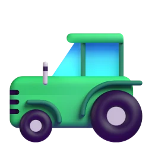

Food the way it was
in the beginning.
We call it A&E, for Adam and Eve: a time when everything was pure, food and drink included. That's the standard we shop by.
It started at
the milk shelf.
The main reason we're here is simple. We couldn't find real milk in the store anymore. Everything on the shelf had been pasteurized, homogenized or ultra-pasteurized, then had vitamins added back in.
So we went back to the farms, and started bringing their milk, just as it comes from the cow, to people who wanted it too. The butter, eggs, meat and everything else followed from there.
We think food that reaches you a day or two after it's harvested or made tastes the way food is supposed to. That's what we try to bring you.

Kathy's
Guernseys.
Guernsey milk is rare. So Kathy started her own herd.
Guernsey milk is golden from beta-carotene, naturally A2/A2, and high in protein and butterfat. It's very creamy, and very hard to find.
Kathy saw the need and started a Guernsey farm to bring that milk to members. It's the only farm like it we know of on the East Coast, apart from one in Vermont. The herd is small, so when the Guernsey runs out, Jersey milk fills in.

The farms we trustRoom to roam,
nothing sprayed.
Most of our farms are small family operations, mostly non-Amish now, plus a few Amish families. They chose to farm this way many years ago.
Grass, and only grass
Our dairy cows and beef cattle never get grain. The farms have plenty of acreage and rotate their grazing, so the pasture stays good and so does the milk.
Careful with grain
Chickens and goats need some grain. Our farmers grow their own or buy certified organic, and never use the local feed-store grain, which can be GMO-free and still sprayed.
Nothing sprayed
No pesticides, herbicides, fungicides or insecticides. No GMO seed, no irradiation, no antibiotics and no hormones. Just the pure product.
Why we're the middleman, on purpose
We're not the farmer, and that's a good thing for you. Standing in between means we can check everything we bring you.
Now and then a product slips. If the farmer won't bring it back up to standard, we move on and find a small farm that makes it the way we once had it, even if that farm is far away. When everyone loves something, like the butter, we keep searching until we find a better butter. We won't lower our standards and keep buying something that's lost its quality.
The family behind it
Udder Milk is Kathy, her daughter Gina and Gina's husband, Moaz. Kathy found the farms and started the herd. Gina and Moaz were brave enough to bring it all online, and they blazed a trail other small farmers have since followed.
We serve anyone who wants fresh, clean food and finds it hard to drive to the farm every week. Many of our members have been with us for years.
Say hello. We'd love to hear from you.
If something's not right,
don't be shy.
Enjoy everything you get from us. If anything isn't up to standard, please tell us. And in every bite and sip, remember to give thanks for this food.